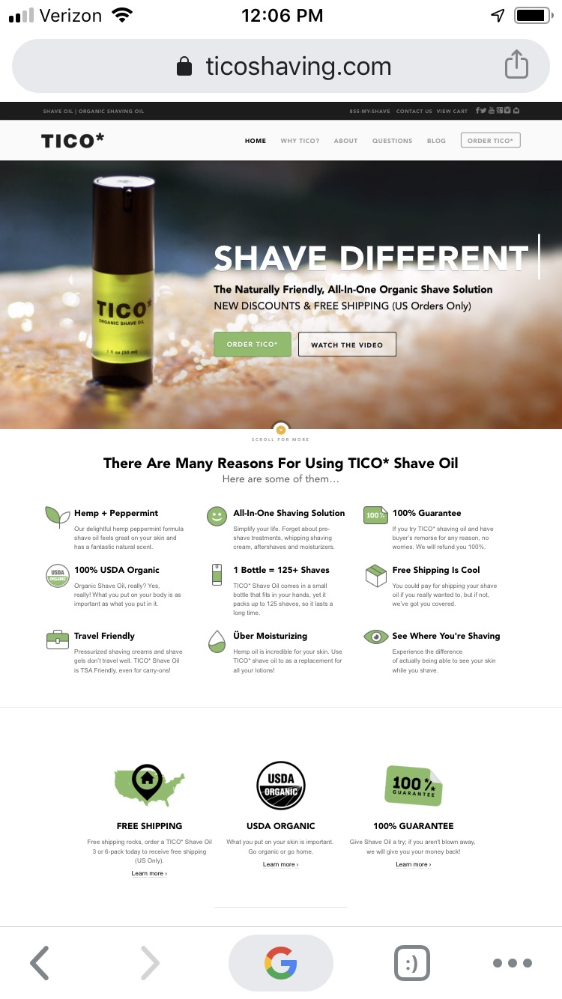

Design Principle: Visual Hierarchy
RizeX Mastermind
RizeX Website LinkVisual hierarchy is the order in which a user processes information on a page; its function in user interface (UI) design is to allow users to understand information easily. the larger the element, the more attention it will attract Color: bright colors are more likely to draw attention over muted ones Contrast: dramatically contrasted colors will catch the eye easily Alignment: an element that breaks away from the alignment of others will attract more attention Repetition: repeating styles can give the impression that content is related Proximity: closely placed elements will also appear related Whitespace: more space around elements will attract the eye toward them Texture and style: richer textures will attract more attention than flat ones.
Design Principle: Rule of Thirds
Tico Shaving
Tico Website Link The main idea about the Rule of Thirds is to divide the layout into nine equal sections with the two horizontal and two vertical lines. Each of these sections will take about 33,33% of the horizontal space and the same percent of the vertical space. That’s why they are called “Thirds”. Intersections of the lines form focal points where the main elements of the composition should be arranged. What can be simpler: Four lines, Four intersection points, and Nine equal sections.
Design Principle: Contrast
V76 by Vaughn
V76 By Vaughn Website LinkDifferences attract the eye, and contrast heightens differences. This is the operative principle behind using contrast for web design: subtly controlling the elements that attracts your user’s eye by what you place around them. Sounds black-and-white? The truth is actually a bit more colorful. We can simplify the types of contrast in web design into three main categories: Light and Dark Colors, Size, Interactive Elements, Background and Foreground, Typography.